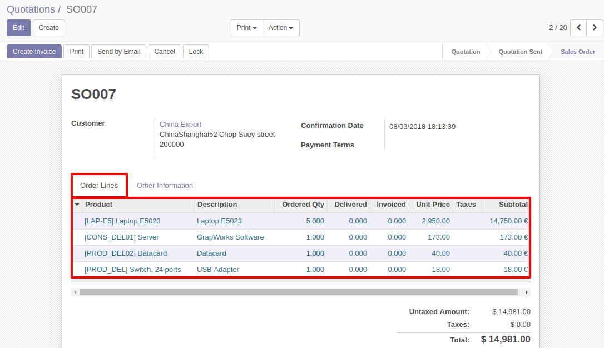
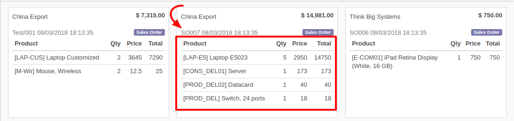

This module is developed to extend the functionality of kanban view.
It fill the gaps at certain extent by allowing to display one2many records in kanban view.
| This is the one2many records which is displayed in form view. | |
| You need to define one2many field in kanban view definition and use for loop(same way we use in qweb) to display fields in kanban view. | |
|
Example: <t t-foreach="record.one2manyfield.raw_value" t-as="o"> <t t-esc="o.name"/> <t t-esc="o.many2onefield[1]"/> </t> |

| After installing this module kanban view one2many record will be display like. |
